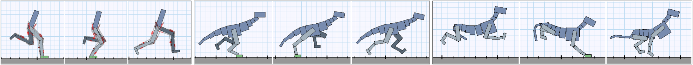

ACM SIGGRAPH / Eurographics Symposium on Computer Animation 2017 Best Student Paper
Xue Bin PengMichiel van de Panne University of British Columbia

Abstract
The use of deep reinforcement learning allows for high-dimensional
state descriptors, but little is known about how the choice of action
representation impacts learning and the resulting performance.
We compare the impact of four different action parameterizations
(torques, muscle-activations, target joint angles, and target jointangle
velocities) in terms of learning time, policy robustness, motion
quality, and policy query rates. Our results are evaluated on a gaitcycle
imitation task for multiple planar articulated figures and
multiple gaits. We demonstrate that the local feedback provided by
higher-level action parameterizations can significantly impact the
learning, robustness, and motion quality of the resulting policies.
@inproceedings{
2017-SCA-action,
author = {Peng, Xue Bin and van de Panne, Michiel},
title = {Learning Locomotion Skills Using DeepRL: Does the Choice of Action Space Matter?},
booktitle = {Proceedings of the ACM SIGGRAPH / Eurographics Symposium on Computer Animation},
series = {SCA '17},
year = {2017},
isbn = {978-1-4503-5091-4},
location = {Los Angeles, California},
pages = {12:1--12:13},
articleno = {12},
numpages = {13},
url = {http://doi.acm.org/10.1145/3099564.3099567},
doi = {10.1145/3099564.3099567},
acmid = {3099567},
publisher = {ACM},
address = {New York, NY, USA},
keywords = {locomotion skills, motion control, physics-based character animation},
}